the art
Colour. Pattern. Possibility.
Something
to stay with.
A space for looking, following a feeling, and finding the unexpected in the familiar.
Enter the galleryA first gathering from
Brooke’s digital archive.

01 / Explore the art
Follow what
catches you.
Different kinds. Different qualities.
No one right way through.


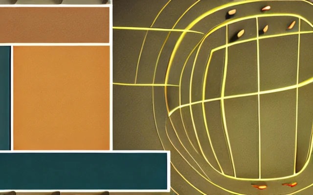

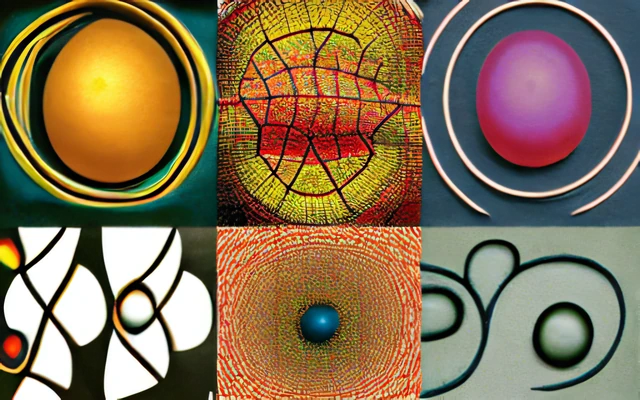

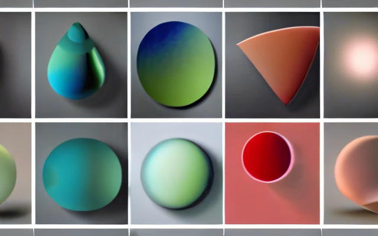

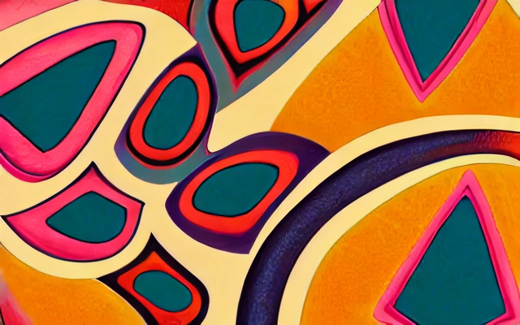

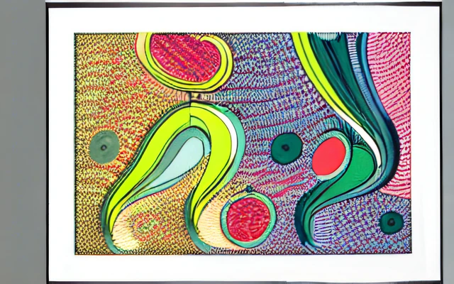

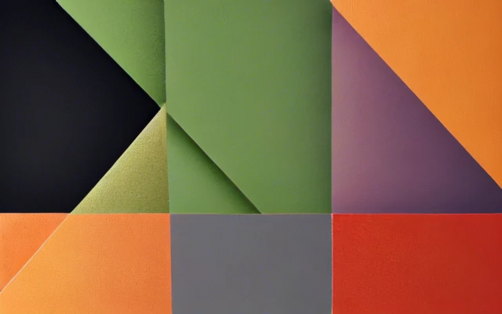

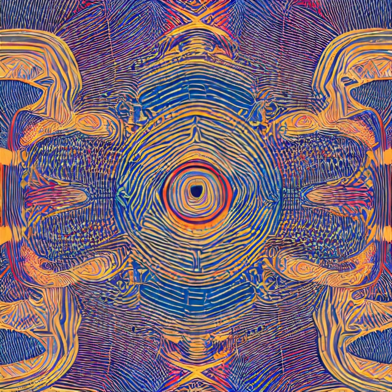

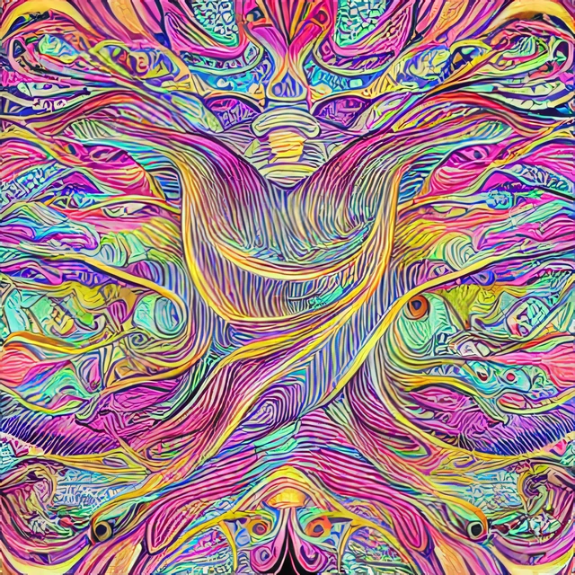

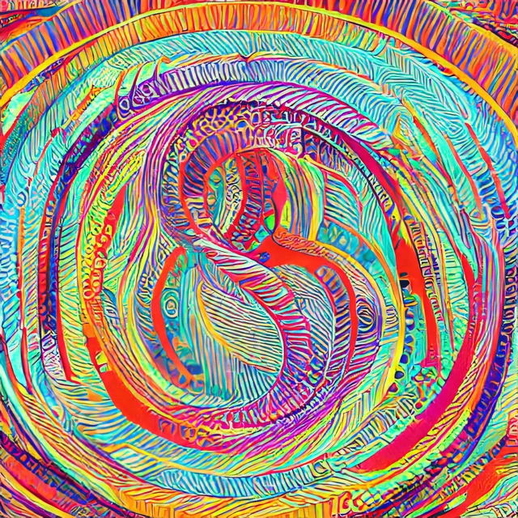

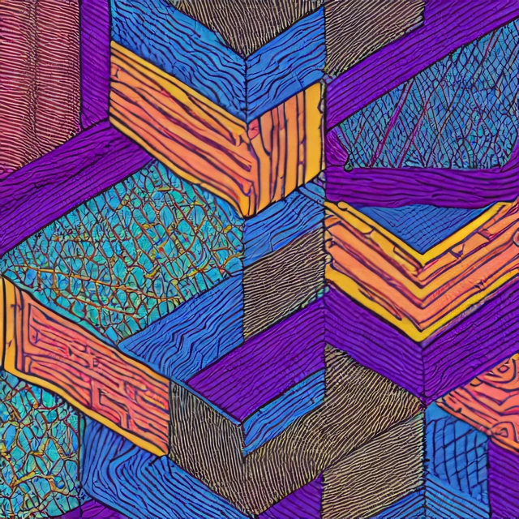

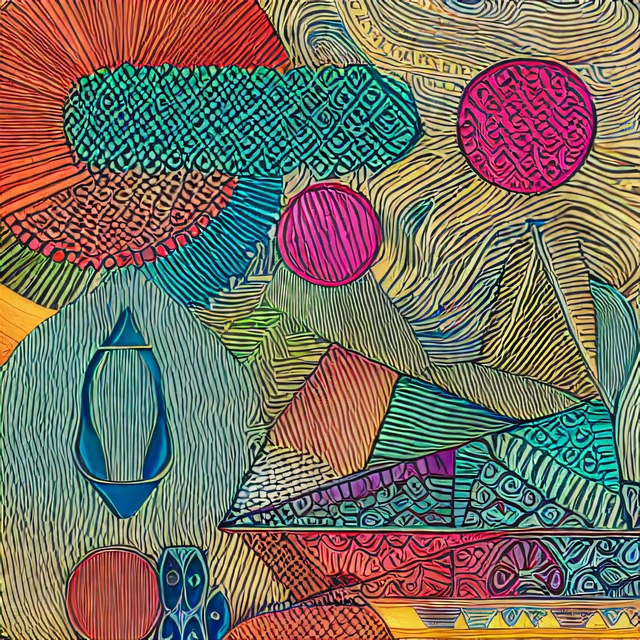

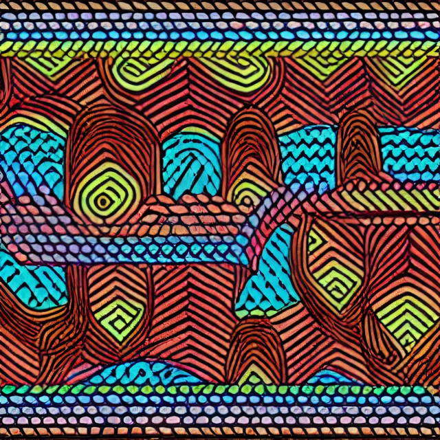

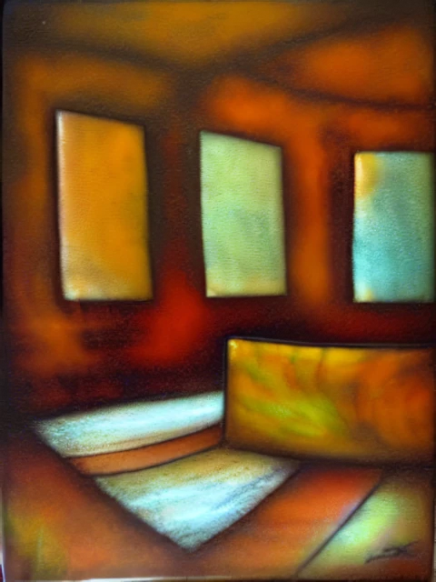

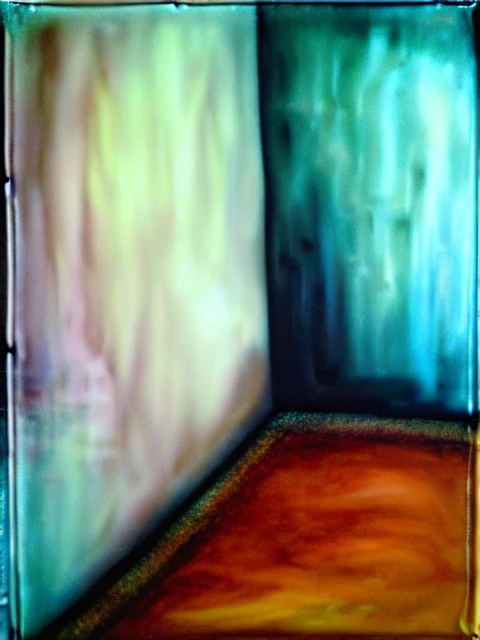

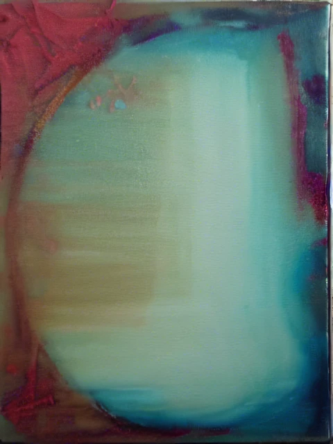

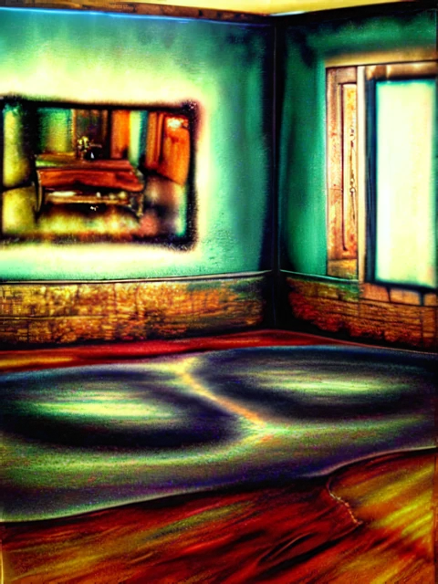

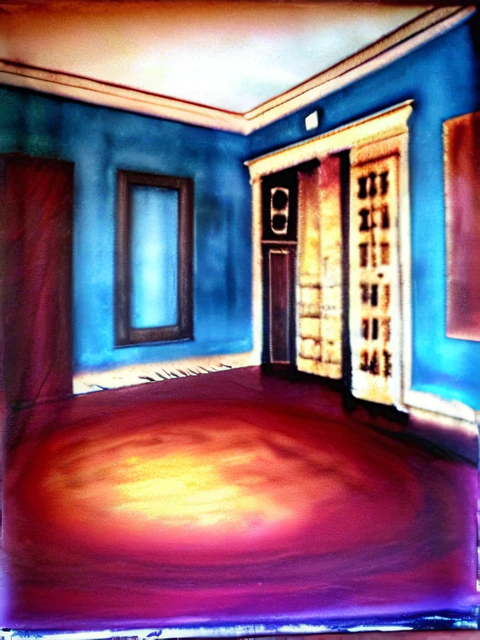

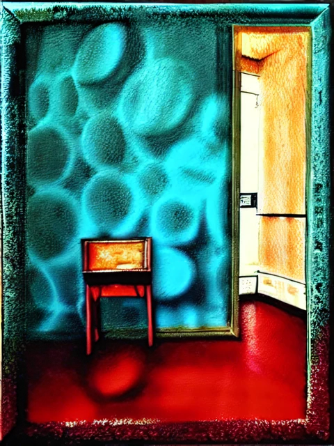

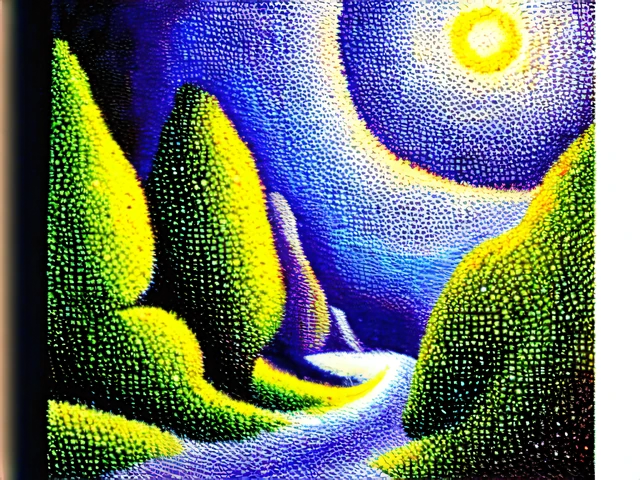

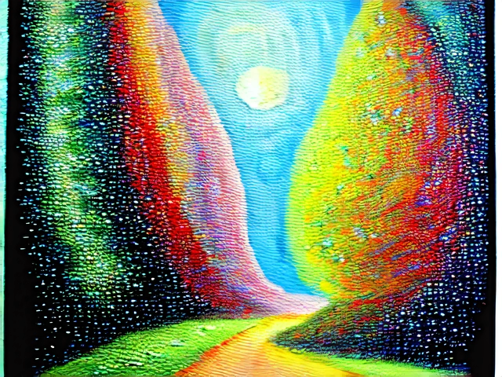


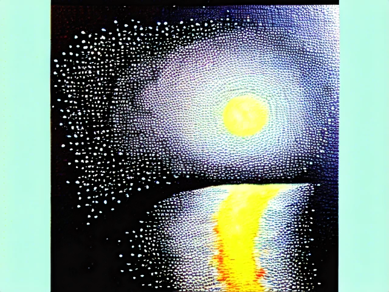

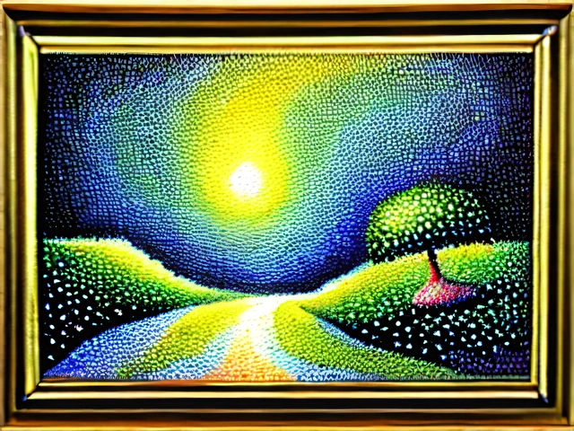


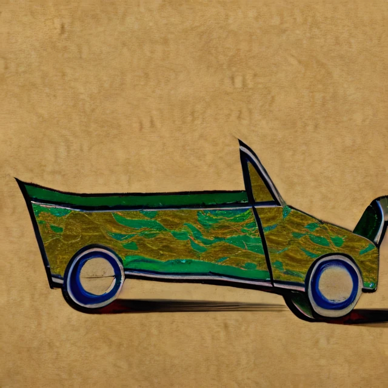

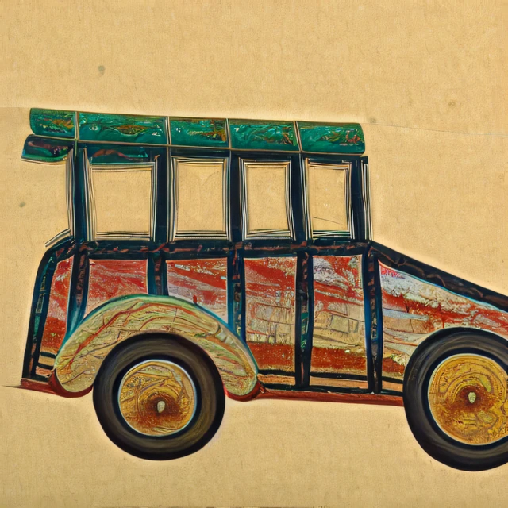

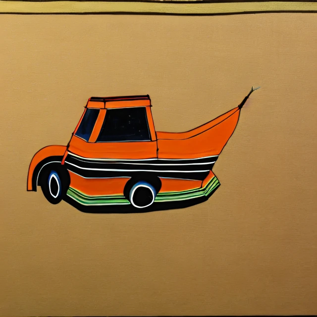

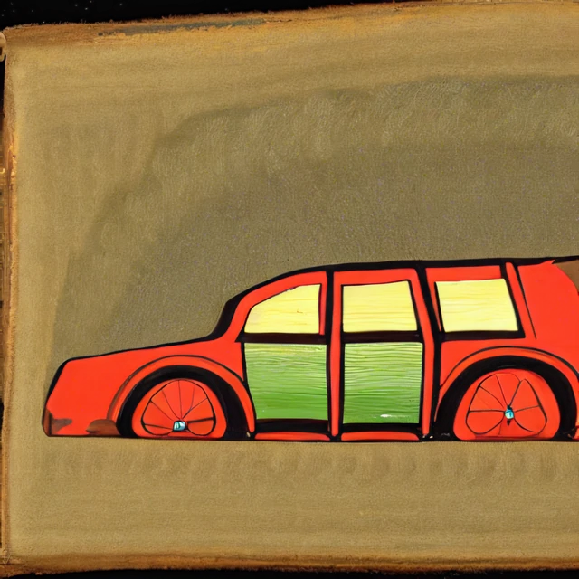

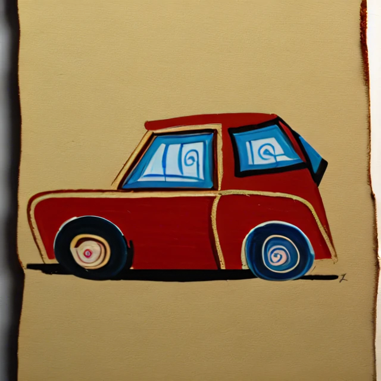

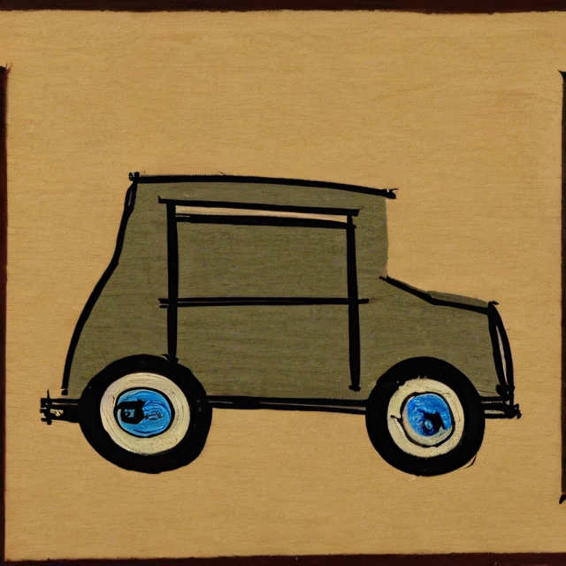


A different way in?
No works match all of those choices. Try fewer qualities, another word, or return to the full collection.
Names and groupings in this first selection are proposed curatorial labels, not original artwork titles.
02 / In conversation
A work has a voice.
A collection, a rhythm.
Selections that belong together.
For looking, and perhaps for living with.
You do not have to take anything away. The gallery is here to be enjoyed.
03 / The Art of Not Art
A place within
a larger work.
“This space is not a static gallery. It’s an evolving archive of interdisciplinary exploration.”
— Brooke Tamsin Clevenger, The Art of Not Art
The wider Art of Not ArtA few things to know.
Look at the whole work
Every artwork opens in full. Images sit on white so their original partial transparency has a consistent backing. The gallery serves web previews, not the original masters.
Collecting, quietly
Available digital collections explain their contents, price and licence in the collection details. Where enabled, checkout and delivery are handled by the linked payment provider. Read the full digital art collection licence before purchase.
Your privacy
No analytics, tracking cookies, third-party fonts or embedded social feeds are added by this gallery. External links take you to separate sites with their own policies.